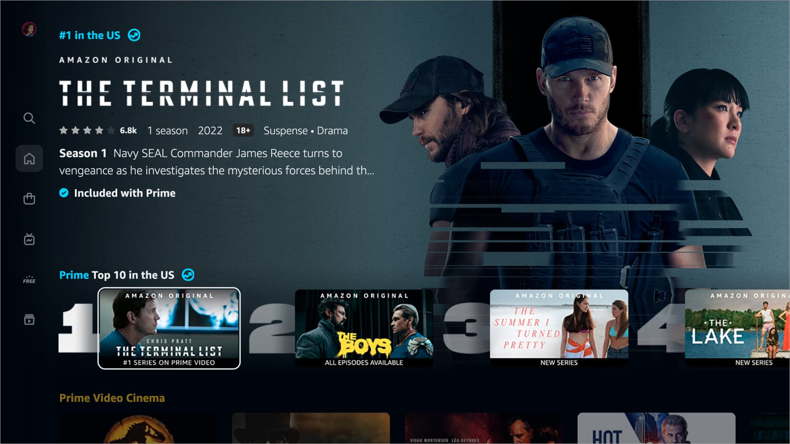

Cores
.gif)
O modo escuro reduz a intensidade da luz da tela, o que diminui a fadiga ocular ao assistir no escuro. A interface escura também faz o conteúdo do filme se destacar sem brilhos periféricos. Além disso, é necessário ter paleta harmônica e com bom contraste, que facilita a leitura e transmite confiança.
Tipografia
Título Claro e Legível
Este texto usa uma fonte sem serifa, com espaçamento adequado entre linhas (line-height: 1.6) e tamanho de fonte apropriado. Resultado: leitura 38% mais rápida e melhor compreensão.
Tempo médio de leitura: 12s
Título Decorativo
Este texto usa fonte decorativa difícil de ler com espaçamento ruim. Usuários levam mais tempo para processar e frequentemente desistem da leitura.
Tempo médio de leitura: 19s
Pense em um site de vinhos finos ou de uma marca de luxo, o design visual precisa estar alinhado com a identidade da marca e o contexto de uso, o que é um fator hedônico crucial na UX.
Vinho Tinto Chileno Perez Cruz Gran
O desing utiliza fontes finas e elegantes e que essa escolha visual comunica exclusividade, qualidade e confiança, reforçando a identidade de uma marca de luxo. Essa mesma lógica se aplica ao streaming: o conteúdo é o produto premium. A tipografia limpa e a organização visual do texto em títulos de filmes e séries sugere qualidade cinematográfica. Combinada ao modo escuro, ela foca a atenção e diminui a fadiga ocular, transformando a leitura em uma experiência de consumo confiável.
Hierarquia Visual e Foco
Plataformas de streaming costumam mostrar séries populares ou novas temporadas no topo da tela, com imagens grandes ou banners animados.
 Exemplo de Interface da plataforma de streaming PrimeVideo, da Amazon.Layout
Bom
Organização limpa, com destaque para o conteúdo principal e navegação intuitiva.
Ruim
Excesso de elementos e cores conflitantes, causando confusão visual.
Thumbnails
Bom
Imagem nítida e cores consistentes com a identidade da marca.
Ruim
Imagem confusa, com muito texto e cores que dificultam a leitura.